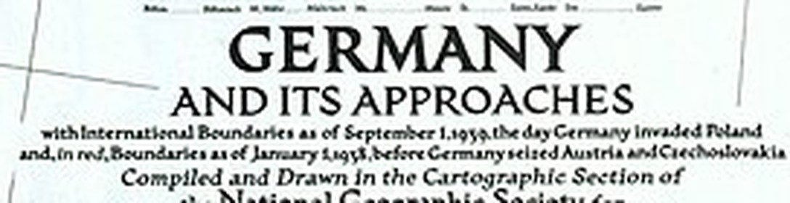
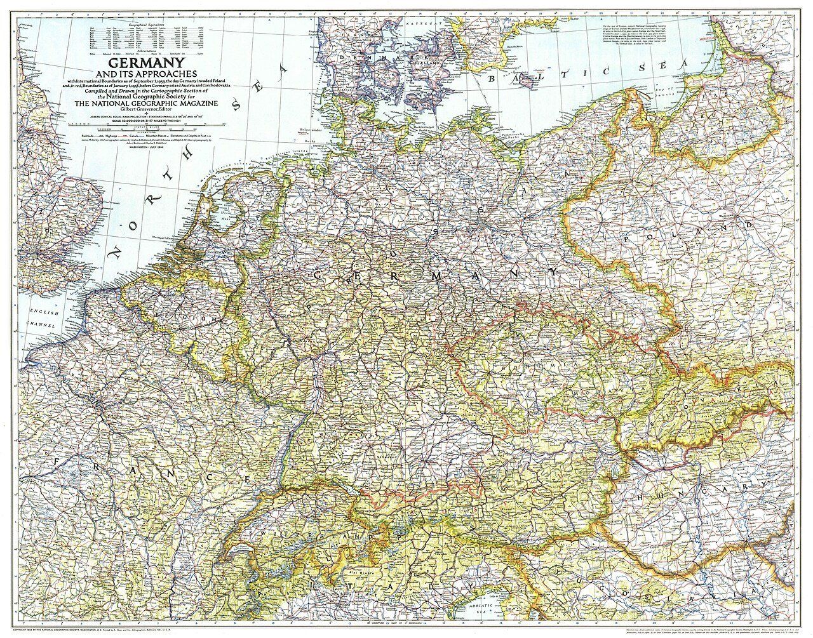
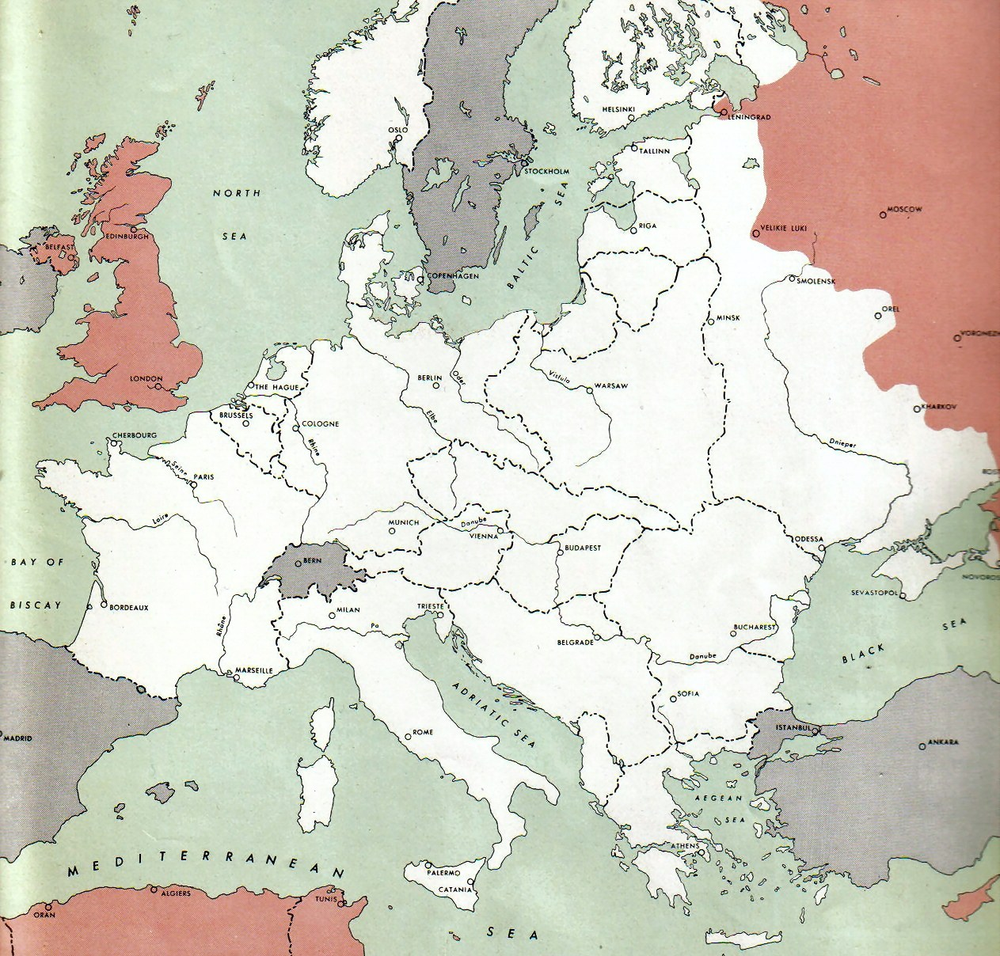
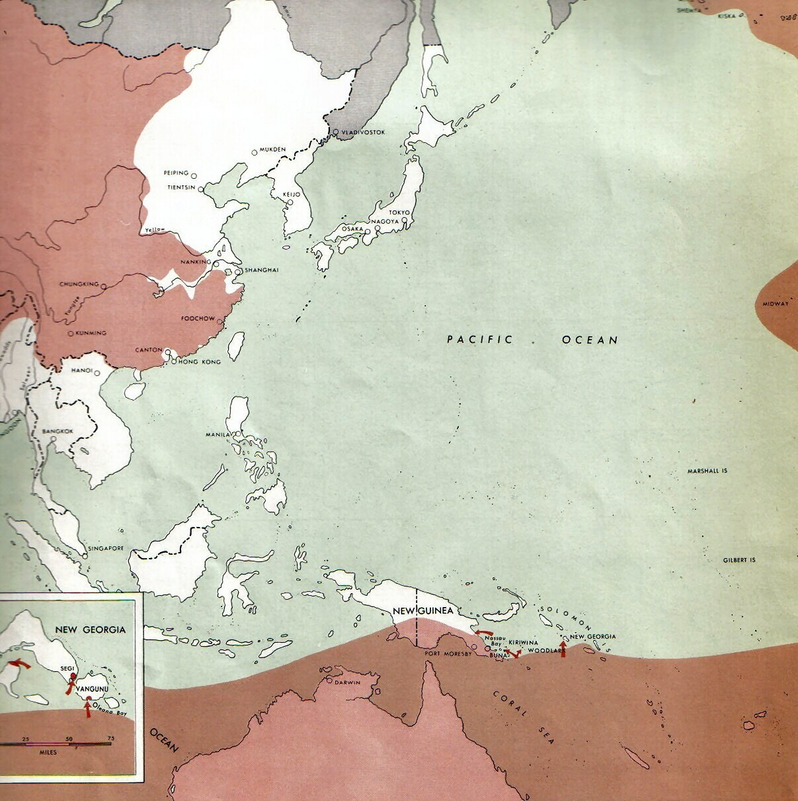

Your mission · about 15 minutes
Germany and Japan took land by force. At each stop: 1) pass the map check, 2) choose what leaders should do and back it up with one fact from the map or the event card, 3) see what really happened. More than one choice can be defended, but a reason with no evidence won't open the history card. Done means all 4 history cards are open.
Four decision stops
1. Germany attacks Poland · September 1939
Before 1939, Germany had already grabbed two of its neighbors, and Britain and France let it happen to avoid war (this was called appeasement). The map shows which two. Then Germany invaded Poland. Britain and France had promised to protect Poland. If they kept that promise, they could enter a wider war.
Map check: Read the map’s title (top picture). The red lines show borders on January 1, 1938, before Germany seized which two countries?


2. France falls · June 1940
Blitzkrieg means “lightning war.” German planes and tanks attacked quickly. France surrendered. Britain was still fighting Germany, and German leaders were considering an invasion of Britain.
Map check: This U.S. Army map shows Europe in July 1943, three years after France fell. White = held by Germany and its partners. Red = Allies. Gray = neutral. Find Paris and London. What on the map helps explain why Germany never conquered Britain?

3. Japan expands in Asia · 1937–1941
Japan invaded parts of China and moved into Southeast Asia. Japan wanted land and supplies. The United States wanted Japan to stop, but the countries were not at war yet.
Map check: This U.S. Army map shows Asia in July 1943. White = held by Japan and its partners. Red = Allies. Find Shanghai, Peiping, and Chungking in China. Where is the Japan-held (white) land in China?

4. Japan attacks Pearl Harbor · December 7, 1941
Japan attacked the U.S. Navy at Pearl Harbor in Hawaii. The surprise attack killed about 2,400 Americans. The United States had not declared war on Japan before the attack.
Map check: This official U.S. Navy photo was taken during the attack on December 7, 1941. What does it show?